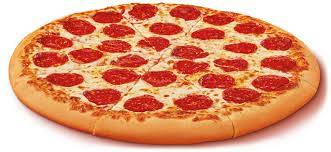

Comida que consiste en una base de masa de pan, generalmente delgada y redonda, que se recubre con salsa de
tomate, queso mozzarella o similar y diversos ingredientes troceados y se cuece al horno; es de origen italiano.
"pizza de jamón y queso".porque me gusto mucho esta Comida.

Indredientes
100 gr. de pepperoni
100 gr. de salam
200 gr. de queso mozzarella rallado
1 lata de tomate triturado
100 gr. de queso parmesano rallado
1 base de masa para pizza casera
Sal
Pimienta<< /li>
Orégano
Albahaca (opcional)
pasos
Prepara la masa
En un tazón, mezcla la harina con la Fécula De Maíz Maizena ® y la sal.
En otro tazón, coloca el agua tibia con el aceite de oliva y la levadura. Mezcla hasta que todo se
integre perfectamente
Integra la levadura con el agua y el aceite al tazón con las harinas y la sal. Con una mano, remueve
todo hasta que se forme una masa, pero no trabajes de más, sólo debes remover hasta integrar los
ingredientes, aproximadamente tres minutos.
Tapa el tazón donde está la pizza con un trapo de cocina y deja que la masa repose durante 15 minutos.
Estira la masa
Coloca un poquito de harina sobre la superficie (sólo un poco para evitar que la masa se pegue). Estira
la masa con tus manos durante tres minutos (no más).
Corta la masa en dos partes y forma una pequeña bolita con cada parte.
Coloca cada pedazo de masa sobre un plato cubierto con harina y tápala con plástico o con un trapito
húmedo.
Deja que la masa repose a temperatura ambiente durante seis horas o en el refrigerador durante 24 horas
(si la vas a dejar en refrigeración, sácala una media hora antes de que continúes al siguiente paso)
El tiempo de reposo es muy importante para que la levadura actúe. Verás que la masa duplicará o incluso
triplicará su tamaño y tomará una consistencia muy suave y esponjadita. Esto es crucial para conseguir
la textura perfecta en tu pizza, así que no te saltes este paso.
Vuelve a enharinar la superficie con harina y coloca, con mucho cuidado, la masa ya fermentada (es decir
que ya duplicó o triplicó su tamaño gracias a la levadura). La base de tu pizza será la que quede por
debajo, en contacto con la superficie enharinada (para que la base quede más crujiente, es necesario que
tenga un poquito más de harina).
Ahora sí, ¡forma la pizza! Utiliza primero tus dedos para estirar la masa poco a poco en todas las
direcciones (para que se vaya formando un círculo).
Con tus dedos forma la orilla: ejerce presión sobre la masa a un centímetro de la orilla, así se formará
la orilla elevada que reconoces en todas las pizzas).
Ahora tienes una pizza pequeña. Para estirarla, tómala entre tus manos y aviéntala de una mano a la otra
mientras la vas girando. Verás cómo se va estirando sin perde su forma circular. No te preocupes si no
sale perfecta a la primera, ¡hacer pizza requiere práctica!
Todo este proceso debe realizarse rápidamente para que no sobretrabajes la masa (no queremos perder el
volumen que ganamos durante el reposo).
¡Listo! Ya sabes cómo hacer masa para pizza desde cero; ahora sólo queda ponerle salsa, queso y los
ingredientes que quieras y ¡al horno!
Recuerda que el horno tiene que estar caliente antes de meter tu pizza a cocción. Lo mejor es que esté a
la máxima temperatura para que la cocción sea rápida. Se tardará entre 10 y 15 minutos en un horno de
gas, un poco más si es horno eléctrico y un poco menos si es un horno de leña o piedra.